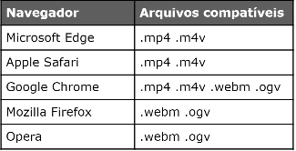

Cuidado com direitos autorais quando se trata de vídeos, caso você queira baixar Vídeos sem direitos autorais recomendo o site pexels, mas não precisa baixar ele com qualidade máxima.
Nos vídeos também é bom colocar o vídeo em diferentes formatos. Você pode editar o formato de seu vídeo com o HandBrake. Ele também consegue reduzir o tamanho do arquivo, deixando ele mais leve.

Você pode colocar uma
Este vídeo está hospedado no meu próprio servidor.
Assim como nos aúdios existem duas formas de se colocar um vídeo hospedado localmente:
Essa primeira forma não funciona muito bem, porque nem todo navegador usa suporta o mesmo formato de vídeo. Por isso temos a segunda forma onde você coloca mais de um formato:
Nessa segunda forma, a ordem tem total influência, primeiro o site tenta usa o formato de cima, em seguida ele vai para o de baixo e assim sucessivamente.
Mas tem um pequeno problema em ter o vídeo hospedado em seu site. Por exemplo, um vídeo de 11MB visto por 1000 pessoas gastou 11,23GB e isso pesa no bolso de seu cliente, pois consome muito tráfego de dados. Por isso você tem que falar ao cliente sobre essa alternativa.
Caso você não queira gastar muito do bolso de seu cliente, indo pelo caminho mais inteligente, acesse a segunda página.